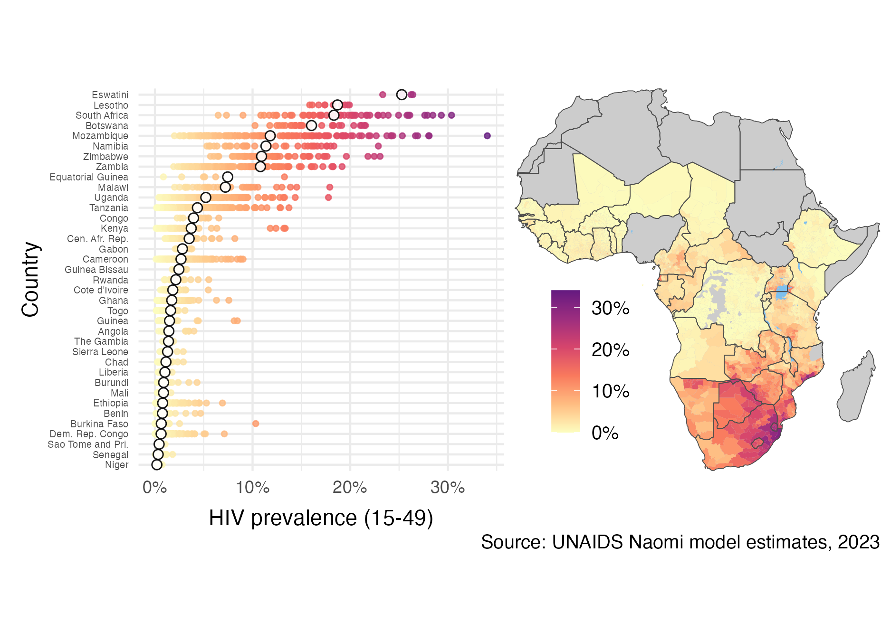

D Bayesian spatio-temporal methods for small-area estimation of HIV indicators
PhD in Modern Statistics and Statistical Machine Learning at Imperial College London.
Supervised by: Seth Flaxman and Jeff Eaton.
Progress towards ending AIDS as a public health threat by 2030 is not being made fast enough. Effective public health response requires accurate, timely, high-resolution estimates of epidemic and demographic indicators. Limitations of available data make obtaining these estimates difficult. I developed and applied Bayesian spatio-temporal methods to meet this challenge. First, I examined models for area-level spatial structure. Second, I estimated district-level HIV risk group proportions, enabling behavioural prioritisation of prevention services, as put forward in the Global AIDS Strategy. Finally, I developed a novel deterministic Bayesian inference method, combining adaptive Gauss-Hermite quadrature with principal component analysis, motivated by the Naomi district-level model of HIV indicators. Together, the contributions in this thesis help to guide precision HIV policy in sub-Saharan Africa, as well as advancing Bayesian methods for spatio-temporal data.

D.1 Chapters
| Title | GitHub repository | Journal | |
|---|---|---|---|
| 1 | Introduction | ||
| 2 | The HIV/AIDS epidemic | ||
| 3 | Bayesian spatio-temporal statistics | ||
| 4 | Spatial structure | beyond-borders |
In preparation! |
| 5 | A model for risk group proportions | multi-agyw |
PLOS Global Public Health |
| 6 | Fast approximate Bayesian inference | naomi-aghq |
In preparation! |
| 7 | Future work and conclusions |
D.2 Citation
If you would like to cite this work, please use:
@phdthesis{howes23,
author = {Howes, Adam},
school = {Imperial College London},
title = {Bayesian spatio-temporal methods for small-area estimation of HIV indicators},
year = {2023}
}D.3 Frequently asked questions
How can I read the thesis?
Thanks for being interested! You can read either the HTML or PDF version. I know, an overwhelming choice. It’s still very much a work in progress at the moment though, so check back in a few months.
How did you format this thesis?
I used the R package thesisdown, inspired by bookdown.
Are there any resources you’d recommend for an introduction to this area of research?
I’d recommend something like Spatial and Spatio-temporal Bayesian models with R-INLA by Marta Blangiardo and Michela Cameletti.
I have a repository with further miscellaneous recommended resources, if you are interested.
I’m a statistician: which parts of the thesis might interest me?
If you use spatial random effects to model areal spatial structure, Chapter 4.
If you’re interested in modelling multinomial data using the multinomial-Poisson transformation and structured random effects, Chapter 5.
If you have a complicated model which is not compatible with R-INLA, but would still like to use INLA-like methods, Chapter 6.
If you have such a model, get in touch!
All of the methods are compatible with any model written in the (very general) Template Model Builder R package (TMB).
I’m a HIV epidemiologist: which parts of the thesis might interest me?
Primarily Chapter 5 will be of interest to you. The Global AIDS Strategy sets out goals for prioritisation of prevention programming for adolescent girls and young women according to risk behaviour and epidemic setting. To enable the strategy, I estimated risk group specific population sizes, prevalence and incidences at a district-level. I also used these estimates to evaluate the extent to which risk varies by age, behaviour, and geographic area. You might also be interested in the analysis in Chapter 6 applying the Naomi small-area estimation model to data from Malawi.